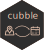

cubble 
Cubble provides a new data structure to manipulate spatio-temporal vector data. It arranges variables into two forms: nested form and long form. The nested form shows each site in a row and time invariant variables as columns. The time varying variables are nested into a ts column. In the long form, each row is cross-identified by the site and time, time varying variables are presented, and time invariant variables are stored as an attribute. The two forms can be switched back and forth for manipulation on the spatial and temporal dimension of the data.
Installation
You can install the released version of cubble from CRAN with:
install.packages("cubble")And the development version from GitHub with:
# install.packages("remotes")
remotes::install_github("huizezhang-sherry/cubble")Example
as_cubble() creates a cubble in the nested form by supplying the spatial identifier, key, temporal identifier, index, and the spatial coordinates that defines the site, coords.
library(cubble)
library(dplyr)
nested <- climate_flat |>
as_cubble(key = id, index = date, coords = c(long, lat))
nested
#> # cubble: key: id [3], index: date, nested form
#> # extent: [144.8321, -37.98, 145.0964, -37.6655]
#> # temporal: prcp [dbl], tmax [dbl], tmin [dbl]
#> id long lat elev name wmo_id ts
#> <chr> <dbl> <dbl> <dbl> <chr> <dbl> <list>
#> 1 ASN00086038 145. -37.7 78.4 essendon airport 95866 <tibble [10 × 4]>
#> 2 ASN00086077 145. -38.0 12.1 moorabbin airport 94870 <tibble [10 × 4]>
#> 3 ASN00086282 145. -37.7 113. melbourne airport 94866 <tibble [10 × 4]>face_temporal() switches a cubble from the nested form to the long form. The long form cubble is for operations whose output is cross-identified by key and index, for example, filtering January records:
long <- nested |>
face_temporal() |>
filter(lubridate::month(date) == 1)
long
#> # cubble: key: id [3], index: date, long form
#> # extent: 2020-01-01 -- 2020-01-10 [1D], no gaps
#> # spatial: long [dbl], lat [dbl], elev [dbl], name [chr], wmo_id [dbl]
#> id date prcp tmax tmin
#> <chr> <date> <dbl> <dbl> <dbl>
#> 1 ASN00086038 2020-01-01 0 26.8 11
#> 2 ASN00086038 2020-01-02 0 26.3 12.2
#> 3 ASN00086038 2020-01-03 0 34.5 12.7
#> 4 ASN00086038 2020-01-04 0 29.3 18.8
#> 5 ASN00086038 2020-01-05 18 16.1 12.5
#> 6 ASN00086038 2020-01-06 104 17.5 11.1
#> 7 ASN00086038 2020-01-07 14 20.7 12.1
#> 8 ASN00086038 2020-01-08 0 26.4 16.4
#> 9 ASN00086038 2020-01-09 0 33.1 17.4
#> 10 ASN00086038 2020-01-10 0 34 19.6
#> # ℹ 20 more rowsface_spatial() switches the long cubble back to the nested cubble. The nested form is for operations whose output is only identified by the key, for example, mutating the average maximum temperature in January:
long |>
face_spatial() |>
mutate(avg_max = mean(ts$tmax, na.rm = TRUE))
#> # cubble: key: id [3], index: date, nested form
#> # extent: [144.8321, -37.98, 145.0964, -37.6655]
#> # temporal: prcp [dbl], tmax [dbl], tmin [dbl]
#> id long lat elev name wmo_id avg_max ts
#> <chr> <dbl> <dbl> <dbl> <chr> <dbl> <dbl> <list>
#> 1 ASN00086038 145. -37.7 78.4 essendon airport 95866 26.5 <tibble>
#> 2 ASN00086077 145. -38.0 12.1 moorabbin airport 94870 25.7 <tibble>
#> 3 ASN00086282 145. -37.7 113. melbourne airport 94866 26.6 <tibble>